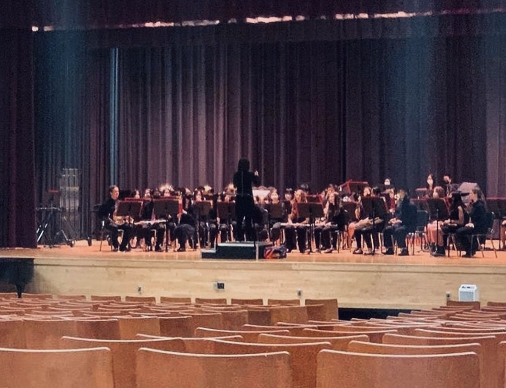
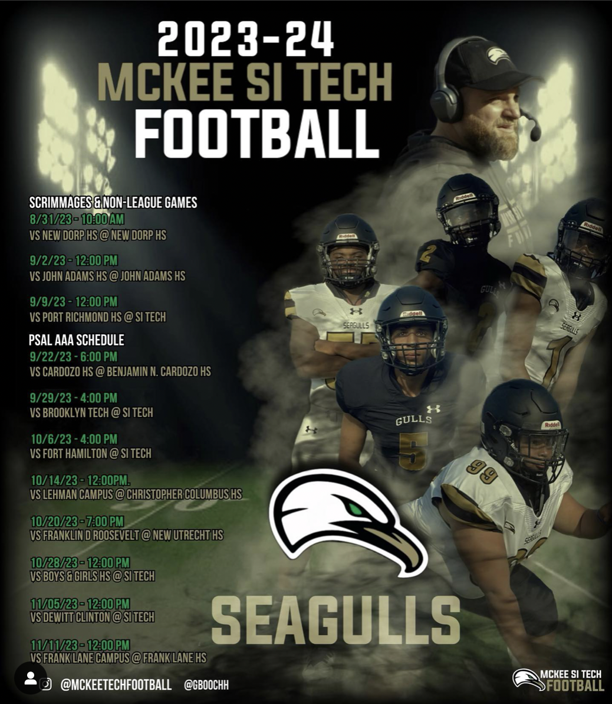
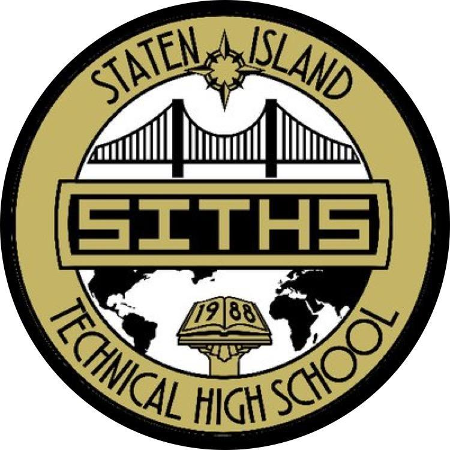

Published: Sep 17, 2023, 5:30 p.m.

By Batyrkhan Alimzhanov
Freshman Band goes to a NYSSMA Adjudication @Tottenville High School (Batyrkhan Alimzhanov's Blog)
A detailed journey of being a performer in the SI Tech band: performances and rehearsals.
Published: Sep 17, 2023, 6:30 p.m.

By Batyrkhan Alimzhanov
MSIT Football presents the schedule for the 2023-2024 school year (Batyrkhan Alimzhanov's Blog)
Matchups, what to expect, my plan of action, and more...
Published: Sep 17, 2023, 6:30 p.m.

By Batyrkhan Alimzhanov
Official logo of Staten Island Technical High School (Batyrkhan Alimzhanov's Blog)
Day in the life, classes, homework and more...